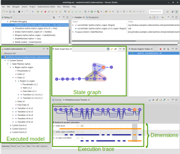
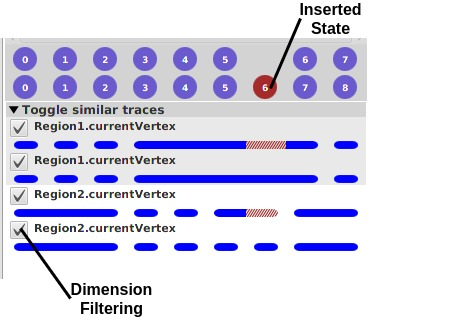
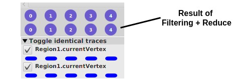

Trace Comprehension Operators for Executable DSLs
Recent approaches contribute facilities to breathe life into metamodels, thus making behavioral models directly executable. Such facilities are particularly helpful to better utilize a model over the time dimension, e.g., for early validation and verification. However, when even a small change is made to the model, to the language definition (e.g., , semantic variation points), or to the external stimuli of an execution scenario, it remains difficult for a designer to grasp the impact of such a change on the resulting execution trace. This prevents accessible trade-off analysis and design-space exploration on behavioral models. In this paper, we propose a set of formally defined operators for analyzing execution traces. The operators include dynamic trace filtering, trace comparison with diff computation and visualization, and graph-based view extraction to analyze cycles. The operators are applied and validated on a demonstrative example that highlight their usefulness for the comprehension specific aspects of the underlying traces.
Dorian Leroy, Erwan Bousse, Anaël Megna, Benoit Combemale, Manuel Wimmer.
Research Paper Submission to the 14th European Conference on Modelling Foundations and Applications (ECMFA 2018)
This page presents the application and the validation of the four operators and their approach presented in our submission to the 14th European Conference on Modelling Foundations and Applications (ECMFA 2018).
Tool support presentation
As explained in the paper, we implemented our approach as a tool provided inside the GEMOC Studio, an Eclipse-based language and modeling workbench to design executable DSLs and execute conforming models. The implementation of the State Machine DSL presented in the paper is available on Github, and can be used as an executable DSL in the GEMOC Studio.
Here is a screenshot of the GEMOC Studio when executing a State Machine model with trace construction and state graph visualization:

We can see:
- at the left, the executed model in a tree representation
- at the bottom, the recorded execution trace is shown with sixteen states and three dimensions
- in the middle, a representation of the state graph obtained using the Graph operator is shown, with three different cycles highlighted using different colors
Now here is a sample of the graphical interface of the tool when comparing two State Machine execution traces:

We can see:
- at the top, the two execution traces being compared, the first with seven states and the second with eight states
- the result of the Compare operator shows us that the second trace has one extra state, shown in red, as compared to the first trace
- at the bottom, two pairs of dimensions are shown (one for
Region1, one forRegion2), with one dimension per trace in each pair, enabling the comparison per dimension - on the left, checkboxes are available to trigger at the same time the Filter and Reduce operators
From there, if we use the checkboxes to filter out the Region2 dimension using Filter and Reduce, we obtain this simplified trace:

We notice that:
- there are only five execution states remaining
- the Compare operator does not find any difference anymore between the traces.
ThingML demonstrative example presentation
In our submission, we motivated and illustrated the approach using an example based on simple UML State Machines with history states. Here, we will focus on a larger xDSML initially based on ThingML to validate the application of our tooling, through relatively small models but which can scale very easily (by just increasing the number of consumers or clients, see below) and with a behaviour that is difficult to predict or anticipate.
ThingML (for Thing Modeling Language) is a modeling language for describing distributed systems. It is used in embedded systems and is oriented towards the description of components (the things) and the way they communicate between each other. The models written in ThingML, through a text editor (standalone, or embedded in Eclipse thanks to Xtext), can be compiled to a large set of target platform like Arduino, C, C++, Java, Android, Javascript, etc.
As a small example of ThingML model, we can consider the following one:

Ping-Pong example model.
This represents two things, one called PingServer and the other one PingClient, which can communicate by sending
ping and pong messages through their own port both called ping_service linked together in the PingPongConfig
configuration.
We use our own graphical concrete syntax for ThingML, as there is no official graphical concrete syntax definition in
the official language definition. We thus represent things with squares, states with ellipses, and transitions with
arrows.
For display purposes, transition event, guards and actions are not described in the figure, but instead, the transitions
are labelled.
In further examples, the transitions will be explained just below the graphical view of the model.
This PingPong model can be written in ThingML as follows:
thing fragment PingPongMsgs {
message ping()
message pong()
}
First, we declare PingPongMsgs Thing which cannot be instantiated as it is declared fragment. We do that to reuse
the message definition in the two following real Things.
thing PingServer includes PingPongMsgs {
provided port ping_service {
sends pong
receives ping
}
statechart PingServerMachine init Active {
on entry print "Ping Server Started!\n"
state Active {
internal
event ping_service?ping
action ping_service!pong()
}
}
}
Then we can declare the PingServer Thing, which reuse PingPongMsgs to be able to use ping and pong messages.
It declares one Provided Port ping_service able to send pong and to receives ping Messages. Provided Port means
that the service is offered by this Thing. If a Message is sent through this Port, every Thing connected to this Port
will receive the Message.
The behaviour of the PingServer is declared in the main Statechart called here PingServerMachine. It starts with
its Active States, just after having printed "Ping Server Started!\n". This State possesses only one Transition
which is internal (Transition to itself) and has no name. This Transition is triggered by the reception of a ping
Message on the ping_service Port. No guard will restrict the trigger. When firing this Transition, a pong Message
will be sent through the ping_service Port.
thing PingClient includes PingPongMsgs {
required port ping_service {
receives pong
sends ping
}
statechart PingClientMachine init Ping {
on entry print "Ping Client Started!\n"
state Ping {
on entry do
print "Send Ping..."
ping_service!ping()
end
transition PONG -> Stop
event ping_service?pong
action print "Got Pong!\n"
}
final state Stop {
on entry print "Bye.\n"
}
}
}
The PingClient Thing also reuse PingPongMsgs. To work properly, the future instance will need to be connected to
a Port through which they would receive pong and send ping.
Its behaviour, called PingClientMachine starts with the Ping State after having printed "Ping Client Started!\n".
When entering the Ping State, it prints "Send Ping...", sends a ping Message on the ping_service Port, and then
wait until a pong Message on the ping_service Port trigger the PONG Transition. When firing this Transition, it
prints "Got Pong!\n" and jumps to the Stop state which is marked final, as no Transition start from it. When
entering this State, it prints "Bye.\n".
configuration PingPongConfig {
instance client : PingClient
instance server : PingServer
connector client.ping_service => server.ping_service
}
Finally, in order to execute something, we write a model Configuration here called PingPongConfig. In this
Configuration, we declare one Instance of PingClient called client, one Instance of PingServer called server,
and we connect their Port together.
Our implementation
As the original ThingML language is made to describe things that run concurrently in a fully-distributed way, we made some adaptations in the executable specification we provided in our Sequential xDSML Execution Semantics definition. Moreover, we only focused on a subset of the initial set of concepts of the semantics specification that was useful for our examples:
- First, we do not support at all any target platform specific part of the language. We based the execution on the subset of types and instructions already present in ThingML;
- Second, even if the model represents things that can evolve in parallel, we execute it in a Sequential way, using a run-to-completion scheduling model to animate the things one by one.
Example Model : Producer-Consumers example model

Producer-Consumers example model (producer point of view).
This model consists in one Producer that produces data, sends it through its output (O) port, and waits for the
answer from the Consumers. The Consumers can only answer with an acknowledgement (ack) or not
acknowledgement (nack). If at least one ack is received, the Producer returns in state Produce, otherwise it
jumps in the Error state and the execution stops.
When all the data has been sent, the Producer goes in End state. Whenever it enters either in state End or
Error, a stop message is sent to the Consumers through the synchronisation (S) port, and the execution stops.
The behaviour of the Producer, written with the concrete syntax, is the following:
statechart Behaviour init Produce {
state Produce {
transition A -> Wait
guard data_index < data_size
action do
output!data(data[data_index])
data_index++
end
transition F -> End
guard data_index >= data_size
}
state Wait {
on entry do
consumer_ack = 0
consumer_nack = 0
end
internal B
event output?ack
guard (consumer_ack + consumer_nack + 1) < consumer_count
action consumer_ack++
internal C
event output?nack
guard (consumer_ack + consumer_nack + 1) < consumer_count
action consumer_nack++
transition D -> Produce
event output?ack
guard consumer_count == (consumer_ack + consumer_nack + 1)
transition E -> Produce
event output?nack
guard (consumer_ack > 0) and (consumer_count == (consumer_ack + consumer_nack + 1))
transition G -> Error
event output?nack
guard consumer_count == (consumer_nack + 1)
}
final state Error {
on entry do synchro!stop()
}
final state End {
on entry do synchro!stop()
}
}
The Consumers’ point of view of the model is the following:

Producer-Consumers example model (sub-model focused on the consumers point of view).
The Consumers will stay in an Active state during the execution. They receive data from the Producer through their
input (I) port, and react depending on the payload (p) transmitted. If they can evolve in their active state, then
they will answer an ack message to the Producer, otherwise the outer transition will fire and they will answer an
nack message.
At any moment, if they receive a stop message through their synchronisation (S) port, they jump to the their End
state and the execution stops.
Written with the concrete syntax, the behaviour of the first Consumer is the following:
statechart Behaviour init Active {
composite state Active init S2 {
state S1 {
...
}
state S2 {
internal S2_p_3
event data : input?data
guard data.p == 3
action input!ack()
transition S2_p_0 -> S1
event data : input?data
guard data.p == 0
action input!ack()
transition S2_p_2 -> S3
event data : input?data
guard data.p == 2
action input!ack()
}
state S3 {
...
}
internal P
event input?data
action input!nack()
transition S -> End
event synchro?stop
}
final state End {}
}
Step by step, the execution of this model proceeds as follows:
- Execution starts,
Producerenters in hisProducestate and all theConsumersenter in theirActivestate in substateS2; Producerfires transitionA: sendsdata(1)through portoutput, incrementsdata_indexto1, and finally jumps in stateWait;Consumer1fires transitionP: sendsnack()through portinputand stay in stateActive.S2;Consumer2fires transitionS2_p_1: sendsack()through portinputand stay in stateActive.S2;Consumer3fires transitionS2_p_1: sendsack()through portinputand jumps to stateActive.S1;Producerfires transitionC: incrementsconsumer_nackand stay in stateWait,
then, fires transitionB: incrementsconsumer_ackand stay in stateWait, and then, fires transitionD: jumps into stateProduce;- etc.
The full execution trace counts 47 states and each one contains 17 dynamic properties (if we only consider those which have at least one change during the execution), which is, even for this very little model, not really user-friendly to read.
| Dynamic Properties | 0 | 1 | 2 | 3 | 4 | 5 | 6 | 7 | 8 | 9 | 10 | 11 | 12 | 13 | 14 | 15 | 16 | 17 | 18 | 19 | 20 | 21 | 22 | 23 | 24 | 25 | 26 | 27 | 28 | 29 | 30 | 31 | 32 | 33 | 34 | 35 | 36 | 37 | 38 | 39 | 40 | 41 | 42 | 43 | 44 | 45 | 46 |
|---|---|---|---|---|---|---|---|---|---|---|---|---|---|---|---|---|---|---|---|---|---|---|---|---|---|---|---|---|---|---|---|---|---|---|---|---|---|---|---|---|---|---|---|---|---|---|---|
| Provider.current_state | null | P | W | W | W | W | W | W | P | W | W | W | W | W | W | P | W | W | W | W | W | W | P | W | W | W | W | W | W | P | W | W | W | W | W | W | P | W | W | W | W | W | W | Er | Er | Er | Er |
| Provider.data_index | null | 0 | 1 | 1 | 1 | 1 | 1 | 1 | 1 | 2 | 2 | 2 | 2 | 2 | 2 | 2 | 3 | 3 | 3 | 3 | 3 | 3 | 3 | 4 | 4 | 4 | 4 | 4 | 4 | 4 | 5 | 5 | 5 | 5 | 5 | 5 | 5 | 6 | 6 | 6 | 6 | 6 | 6 | 6 | 6 | 6 | 6 |
| Provider.consumer_ack | null | 0 | 0 | 0 | 0 | 0 | 0 | 1 | 1 | 0 | 0 | 0 | 0 | 1 | 1 | 1 | 0 | 0 | 0 | 0 | 1 | 2 | 2 | 0 | 0 | 0 | 0 | 1 | 2 | 2 | 0 | 0 | 0 | 0 | 0 | 1 | 1 | 0 | 0 | 0 | 0 | 0 | 0 | 0 | 0 | 0 | 0 |
| Provider.consumer_nack | null | 0 | 0 | 0 | 0 | 0 | 1 | 1 | 1 | 0 | 0 | 0 | 0 | 0 | 1 | 1 | 0 | 0 | 0 | 0 | 0 | 0 | 0 | 0 | 0 | 0 | 0 | 0 | 0 | 0 | 0 | 0 | 0 | 0 | 1 | 1 | 1 | 0 | 0 | 0 | 0 | 1 | 2 | 2 | 2 | 2 | 2 |
| Provider.output.messages | null | [ ] | [ ] | [n] | [n,a] | [n,a,a] | [a,a] | [a] | [ ] | [ ] | [a] | [a,n] | [a,n,a] | [n,a] | [a] | [ ] | [ ] | [a] | [a,a] | [a,a,a] | [a,a] | [a] | [ ] | [ ] | [a] | [a,a] | [a,a,n] | [a,n] | [n] | [ ] | [ ] | [n] | [n,a] | [n,a,a] | [a,a] | [a] | [ ] | [ ] | [n] | [n,n] | [n,n,n] | [n,n] | [n] | [ ] | [ ] | [ ] | [ ] |
| Consumer1.current_state | null | A | A | A | A | A | A | A | A | A | A | A | A | A | A | A | A | A | A | A | A | A | A | A | A | A | A | A | A | A | A | A | A | A | A | A | A | A | A | A | A | A | A | A | E | E | E |
| Consumer1.Active.current_state | null | S2 | S2 | S2 | S2 | S2 | S2 | S2 | S2 | S2 | S2 | S2 | S2 | S2 | S2 | S2 | S2 | S3 | S3 | S3 | S3 | S3 | S3 | S3 | S3 | S3 | S3 | S3 | S3 | S3 | S3 | S3 | S3 | S3 | S3 | S3 | S3 | S3 | S3 | S3 | S3 | S3 | S3 | S3 | null | null | null |
| Consumer1.input.messages | null | [ ] | [d(1)] | [ ] | [ ] | [ ] | [ ] | [ ] | [ ] | [d(3)] | [ ] | [ ] | [ ] | [ ] | [ ] | [ ] | [d(2)] | [ ] | [ ] | [ ] | [ ] | [ ] | [ ] | [d(2)] | [ ] | [ ] | [ ] | [ ] | [ ] | [ ] | [d(0)] | [ ] | [ ] | [ ] | [ ] | [ ] | [ ] | [d(0)] | [ ] | [ ] | [ ] | [ ] | [ ] | [ ] | [ ] | [ ] | [ ] |
| Consumer1.synchro.messages | null | [ ] | [ ] | [ ] | [ ] | [ ] | [ ] | [ ] | [ ] | [ ] | [ ] | [ ] | [ ] | [ ] | [ ] | [ ] | [ ] | [ ] | [ ] | [ ] | [ ] | [ ] | [ ] | [ ] | [ ] | [ ] | [ ] | [ ] | [ ] | [ ] | [ ] | [ ] | [ ] | [ ] | [ ] | [ ] | [ ] | [ ] | [ ] | [ ] | [ ] | [ ] | [ ] | [s] | [ ] | [ ] | [ ] |
| Consumer2.current_state | null | A | A | A | A | A | A | A | A | A | A | A | A | A | A | A | A | A | A | A | A | A | A | A | A | A | A | A | A | A | A | A | A | A | A | A | A | A | A | A | A | A | A | A | A | E | E |
| Consumer2.Active.current_state | null | S2 | S2 | S2 | S2 | S2 | S2 | S2 | S2 | S2 | S2 | S2 | S2 | S2 | S2 | S2 | S2 | S2 | S1 | S1 | S1 | S1 | S1 | S1 | S1 | S2 | S2 | S2 | S2 | S2 | S2 | S2 | S3 | S3 | S3 | S3 | S3 | S3 | S3 | S3 | S3 | S3 | S3 | S3 | S3 | null | null |
| Consumer2.input.messages | null | [ ] | [d(1)] | [d(1)] | [ ] | [ ] | [ ] | [ ] | [ ] | [d(3)] | [d(3)] | [ ] | [ ] | [ ] | [ ] | [ ] | [d(2)] | [d(2)] | [ ] | [ ] | [ ] | [ ] | [ ] | [d(2)] | [d(2)] | [ ] | [ ] | [ ] | [ ] | [ ] | [d(0)] | [d(0)] | [ ] | [ ] | [ ] | [ ] | [ ] | [d(0)] | [d(0)] | [ ] | [ ] | [ ] | [ ] | [ ] | [ ] | [ ] | [ ] |
| Consumer2.synchro.messages | null | [ ] | [ ] | [ ] | [ ] | [ ] | [ ] | [ ] | [ ] | [ ] | [ ] | [ ] | [ ] | [ ] | [ ] | [ ] | [ ] | [ ] | [ ] | [ ] | [ ] | [ ] | [ ] | [ ] | [ ] | [ ] | [ ] | [ ] | [ ] | [ ] | [ ] | [ ] | [ ] | [ ] | [ ] | [ ] | [ ] | [ ] | [ ] | [ ] | [ ] | [ ] | [ ] | [s] | [s] | [ ] | [ ] |
| Consumer3.current_state | null | A | A | A | A | A | A | A | A | A | A | A | A | A | A | A | A | A | A | A | A | A | A | A | A | A | A | A | A | A | A | A | A | A | A | A | A | A | A | A | A | A | A | A | A | A | E |
| Consumer3.Active.current_state | null | S2 | S2 | S2 | S2 | S1 | S1 | S1 | S1 | S1 | S1 | S1 | S2 | S2 | S2 | S2 | S2 | S2 | S2 | S3 | S3 | S3 | S3 | S3 | S3 | S3 | S3 | S3 | S3 | S3 | S3 | S3 | S3 | S2 | S2 | S2 | S2 | S2 | S2 | S2 | S2 | S2 | S2 | S2 | S2 | S2 | null |
| Consumer3.input.messages | null | [ ] | [d(1)] | [d(1)] | [d(1)] | [ ] | [ ] | [ ] | [ ] | [d(3)] | [d(3)] | [d(3)] | [ ] | [ ] | [ ] | [ ] | [d(2)] | [d(2)] | [d(2)] | [ ] | [ ] | [ ] | [ ] | [d(2)] | [d(2)] | [d(2)] | [ ] | [ ] | [ ] | [ ] | [d(0)] | [d(0)] | [d(0)] | [ ] | [ ] | [ ] | [ ] | [d(0)] | [d(0)] | [d(0)] | [ ] | [ ] | [ ] | [ ] | [ ] | [ ] | [ ] |
| Consumer3.synchro.messages | null | [ ] | [ ] | [ ] | [ ] | [ ] | [ ] | [ ] | [ ] | [ ] | [ ] | [ ] | [ ] | [ ] | [ ] | [ ] | [ ] | [ ] | [ ] | [ ] | [ ] | [ ] | [ ] | [ ] | [ ] | [ ] | [ ] | [ ] | [ ] | [ ] | [ ] | [ ] | [ ] | [ ] | [ ] | [ ] | [ ] | [ ] | [ ] | [ ] | [ ] | [ ] | [ ] | [s] | [s] | [s] | [ ] |
In order to get something interesting out of this lot of information, we can filter the dimension of the trace.
For instance, keeping only the set of information composed of the Producer.current_state and Active.current_state
from all the Consumers, we would be able to observe the effect of the number sequence in the data_list of the
Producer on the whole model.
| Dynamic Properties | 0 | 1 | 2 | 3 | 4 | 5 | 6 | 7 | 8 | 9 | 10 | 11 | 12 | 13 | 14 | 15 | 16 | 17 | 18 | 19 | 20 | 21 | 22 | 23 | 24 | 25 | 26 | 27 | 28 | 29 | 30 | 31 | 32 | 33 | 34 | 35 | 36 | 37 | 38 | 39 | 40 | 41 | 42 | 43 | 44 | 45 | 46 |
|---|---|---|---|---|---|---|---|---|---|---|---|---|---|---|---|---|---|---|---|---|---|---|---|---|---|---|---|---|---|---|---|---|---|---|---|---|---|---|---|---|---|---|---|---|---|---|---|
| Provider.current_state | null | P | W | W | W | W | W | W | P | W | W | W | W | W | W | P | W | W | W | W | W | W | P | W | W | W | W | W | W | P | W | W | W | W | W | W | P | W | W | W | W | W | W | Er | Er | Er | Er |
| Consumer1.Active.current_state | null | S2 | S2 | S2 | S2 | S2 | S2 | S2 | S2 | S2 | S2 | S2 | S2 | S2 | S2 | S2 | S2 | S3 | S3 | S3 | S3 | S3 | S3 | S3 | S3 | S3 | S3 | S3 | S3 | S3 | S3 | S3 | S3 | S3 | S3 | S3 | S3 | S3 | S3 | S3 | S3 | S3 | S3 | S3 | null | null | null |
| Consumer2.Active.current_state | null | S2 | S2 | S2 | S2 | S2 | S2 | S2 | S2 | S2 | S2 | S2 | S2 | S2 | S2 | S2 | S2 | S2 | S1 | S1 | S1 | S1 | S1 | S1 | S1 | S2 | S2 | S2 | S2 | S2 | S2 | S2 | S3 | S3 | S3 | S3 | S3 | S3 | S3 | S3 | S3 | S3 | S3 | S3 | S3 | null | null |
| Consumer3.Active.current_state | null | S2 | S2 | S2 | S2 | S1 | S1 | S1 | S1 | S1 | S1 | S1 | S2 | S2 | S2 | S2 | S2 | S2 | S2 | S3 | S3 | S3 | S3 | S3 | S3 | S3 | S3 | S3 | S3 | S3 | S3 | S3 | S3 | S2 | S2 | S2 | S2 | S2 | S2 | S2 | S2 | S2 | S2 | S2 | S2 | S2 | null |
Now that we have the subset of dimensions, we can reduce the trace by merging the states that are similar and neighboring together.
| Dynamic Properties | 0 | 1 | 2 | 3 | 4 | 5 | 6 | 7 | 8 | 9 | 10 | 11 | 12 | 13 | 14 | 15 | 16 | 17 | 18 | 19 | 20 | 21 | 22 | 23 | 24 |
|---|---|---|---|---|---|---|---|---|---|---|---|---|---|---|---|---|---|---|---|---|---|---|---|---|---|
| Provider.current_state | null | P | W | W | P | W | W | P | W | W | W | W | P | W | W | P | W | W | W | P | W | Er | Er | Er | Er |
| Consumer1.Active.current_state | null | S2 | S2 | S2 | S2 | S2 | S2 | S2 | S2 | S3 | S3 | S3 | S3 | S3 | S3 | S3 | S3 | S3 | S3 | S3 | S3 | S3 | null | null | null |
| Consumer2.Active.current_state | null | S2 | S2 | S2 | S2 | S2 | S2 | S2 | S2 | S2 | S1 | S1 | S1 | S1 | S2 | S2 | S2 | S3 | S3 | S3 | S3 | S3 | S3 | null | null |
| Consumer3.Active.current_state | null | S2 | S2 | S1 | S1 | S1 | S2 | S2 | S2 | S2 | S2 | S3 | S3 | S3 | S3 | S3 | S3 | S3 | S2 | S2 | S2 | S2 | S2 | S2 | null |
Some of the states that we obtained after filtering and reducing are similar but not next to each other. We can, thanks to the graph operator, observe what are the equivalences and how they interfere.
Just for comprehension, we put here the result of the computation of the equivalence classes.
| Equivalence Class | 0 | 1 | 2 | 3 | 4 | 5 | 6 | 7 | 8 | 9 | 10 | 11 | 12 | 13 | 14 | 15 | 16 | 17 |
|---|---|---|---|---|---|---|---|---|---|---|---|---|---|---|---|---|---|---|
| Associated States | (0) | (1, 7) | (2, 6, 8) | (3, 5) | (4) | (9) | (10) | (11, 13) | (12) | (14, 16) | (15) | (17) | (18, 20) | (19) | (21) | (22) | (23) | (24) |
The graph operator will produce a graph similar to the following one, we arrange it to better comprehend and interpret what happened during the execution.

Result of the graph operator applied on the filtered and reduced execution trace.
With this view, we can understand two things:
- starting from the initial state, sending data sequence
[1, 3]will loop and will not modifiy the state of the system composed of the three consumers (at least, their current state); and - the minimal sequence that brought the system in a error state is, starting from the initial state,
[2, 2, 0, 0].